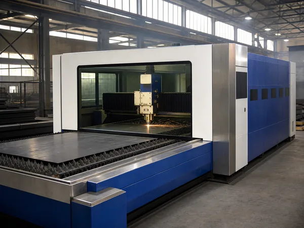
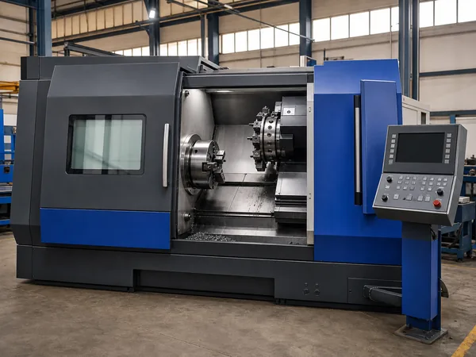
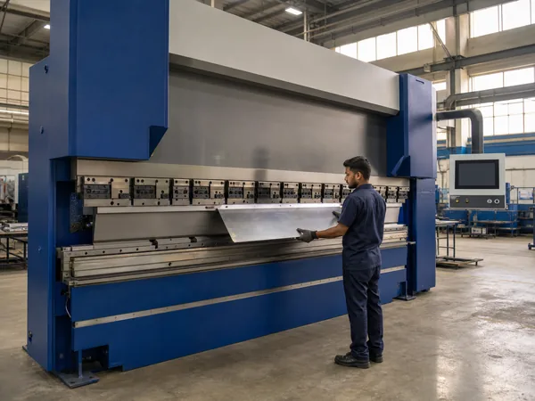
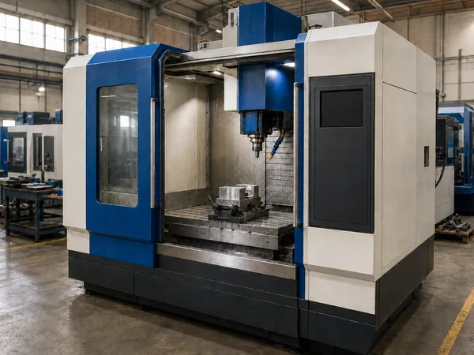
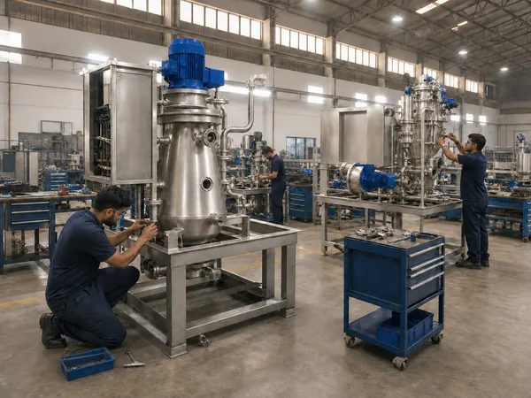
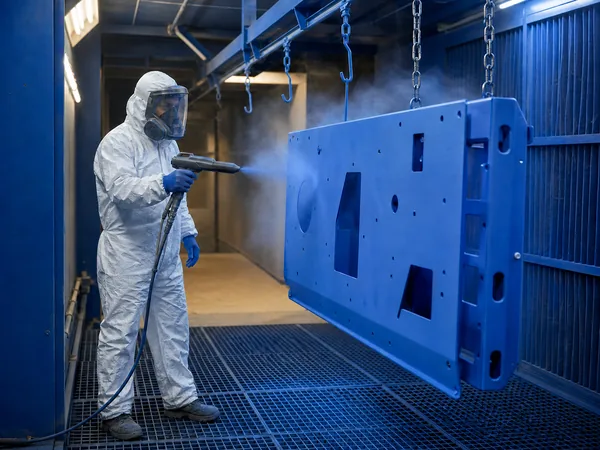

01
CNC laser cutting
High-speed CNC laser cutting for accurate, clean-edged fabricated components — where the durability of every machine begins.
Fabrication, machining, assembly and finishing happen under our own roof. That is what lets one team control quality and timelines from the first cut sheet to the finished, tested machine.

High-speed CNC laser cutting for accurate, clean-edged fabricated components — where the durability of every machine begins.

Computer-controlled turning centres hold consistent dimensional accuracy and clean surface finishes on precision-engineered parts.

Automated CNC bending forms sheet-metal components repeatably and precisely, for structural strength and consistent assembly.

Multi-axis precision milling and drilling for complex parts with tight tolerances and excellent repeatability.

Streamlined assembly bays where components come together under rigorous quality checks before a machine leaves the floor.

Powder coating for uniform coverage, durability, corrosion resistance and a clean finish.
With over two decades of operations, we have mastered the ability to capture emerging trends and set new benchmarks in grain processing technology through continuous R&D and customer-focused services. Our strong market intelligence enables us to anticipate and meet the evolving demands of the industry with advanced, high-performance solutions.
The machines this floor produces are on the site — and the best proof is a running line.